The order is unchanged: choose, see, understand, enquire.
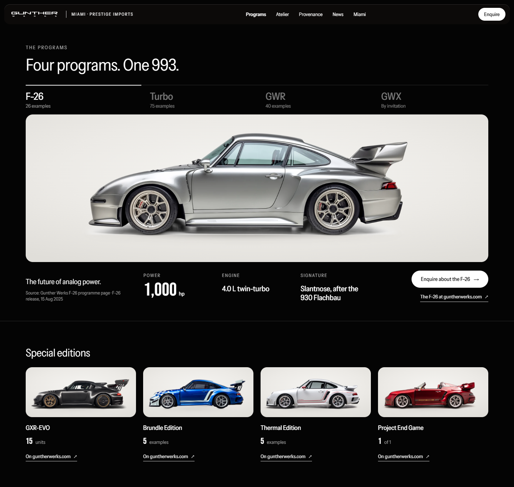
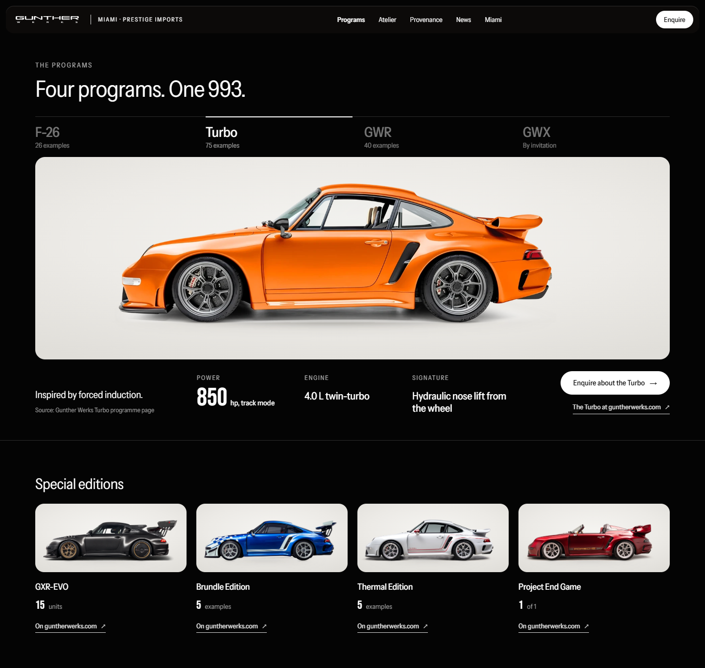
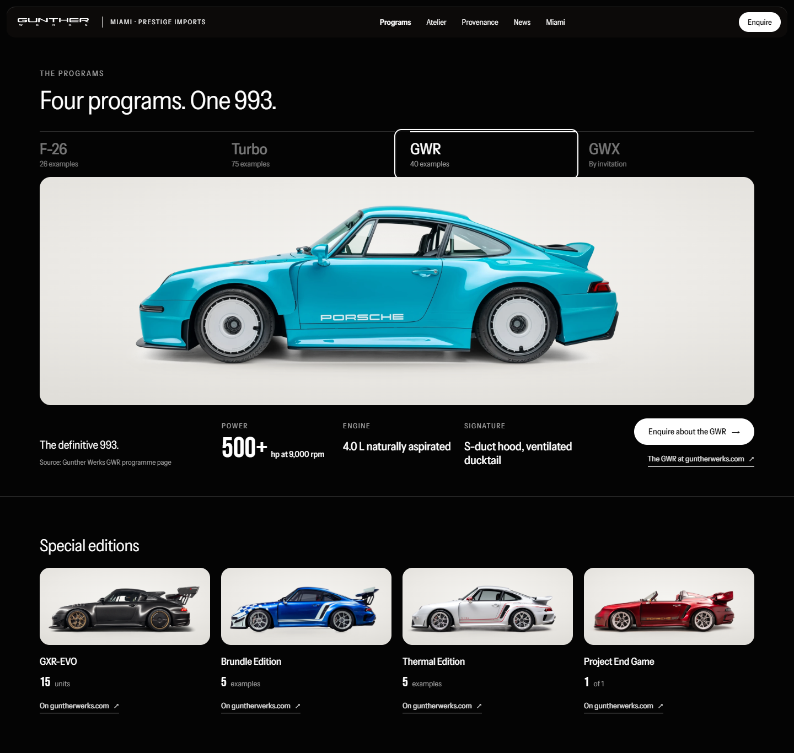
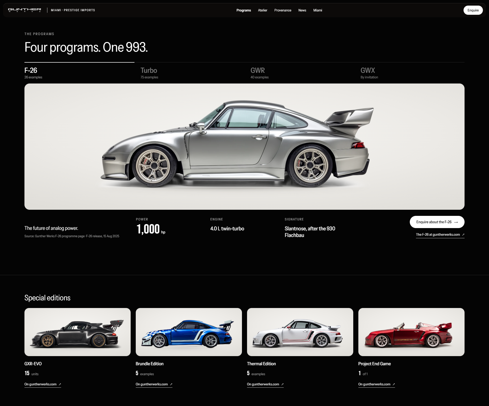
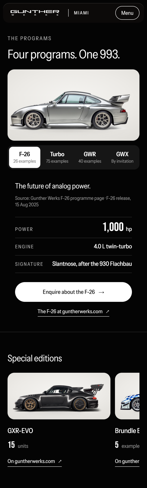
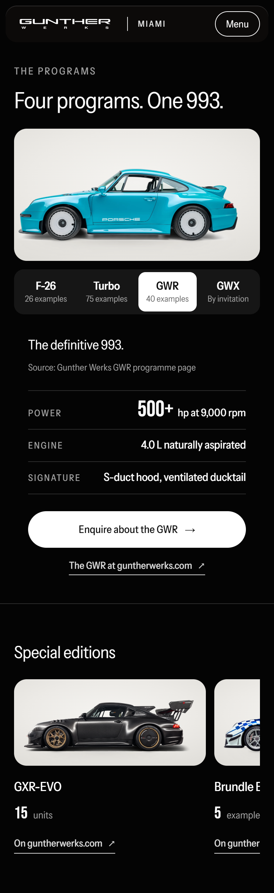
The four programs at their 1440 stage size (plate 1296×414 CSS px); the four special editions at their 1440 tile size (309×140). Wheels, tyres and lower body are visible on the ground in every frame.
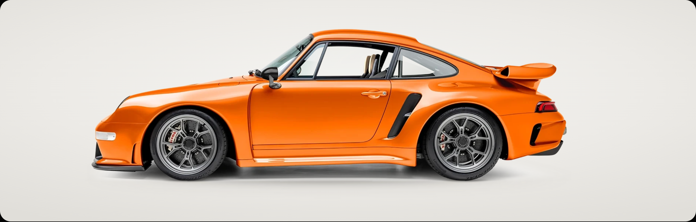
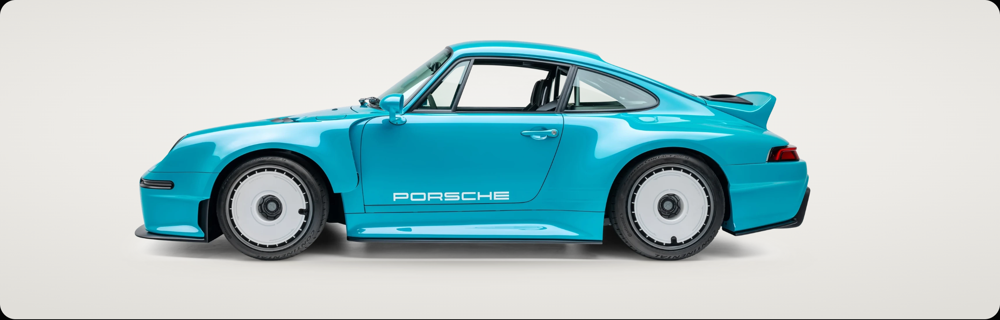
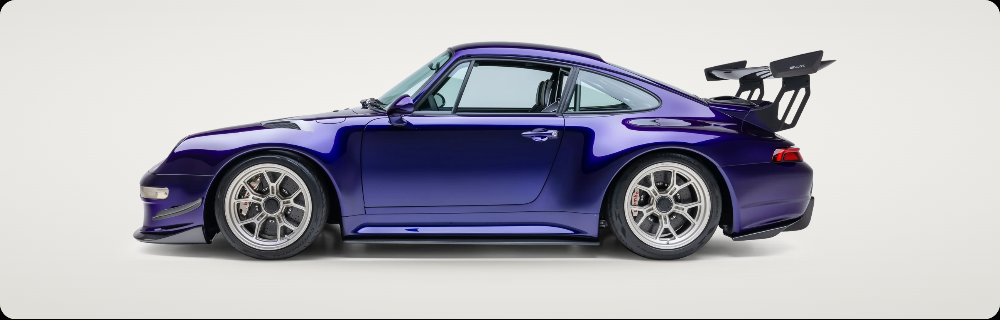
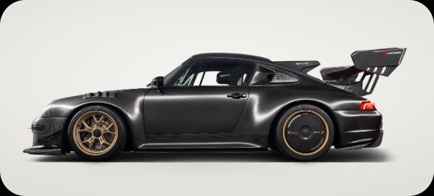
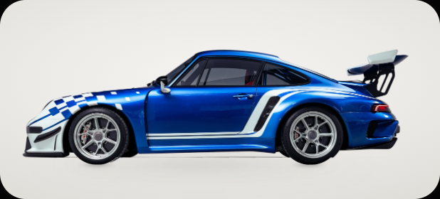
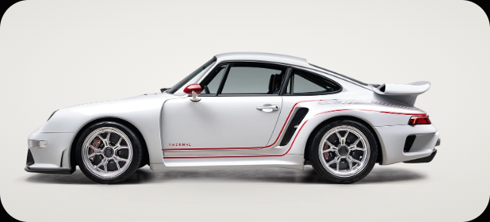
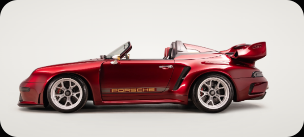
This is a normal editorial chapter: no video, no pin, no scrub. The photograph is an inset plate on the same dark ground as the Atelier chapter before it, the same language as Atelier's own image plates, so nothing is dropped in. The supporting line and the descriptive caption are removed.
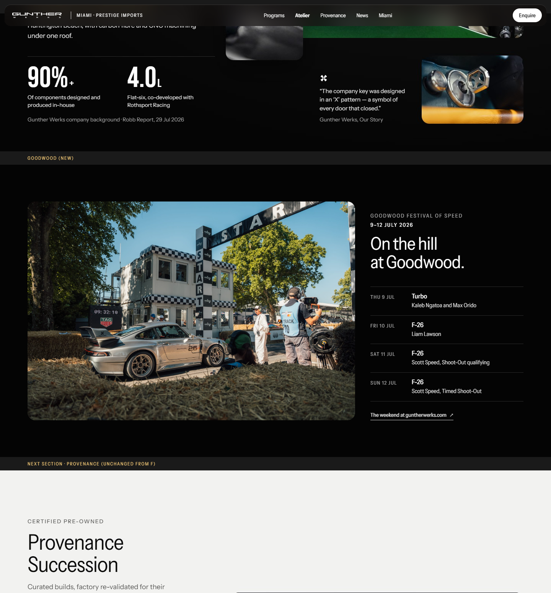
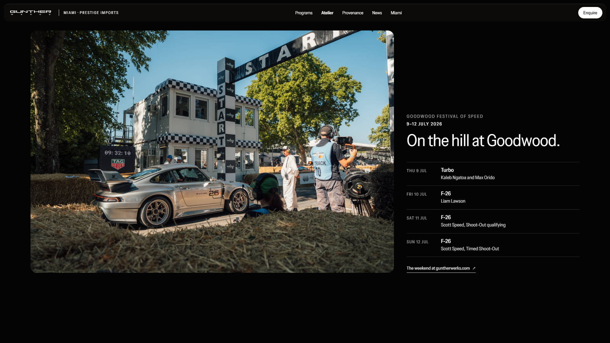
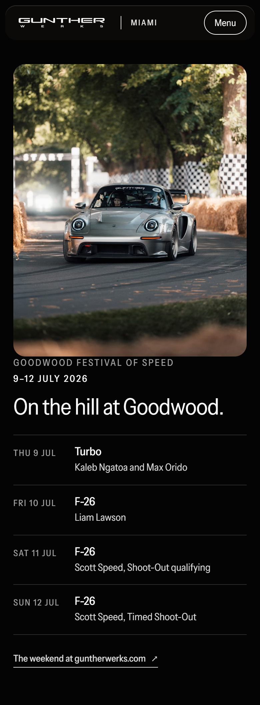
One purpose and one action. The section is a heading, one line and “Make an enquiry”. Clicking opens a compact form in place, where the interest is a choice inside the form, not three explanatory blocks. There is no photograph, address, phone, email, specialist credit or caption.
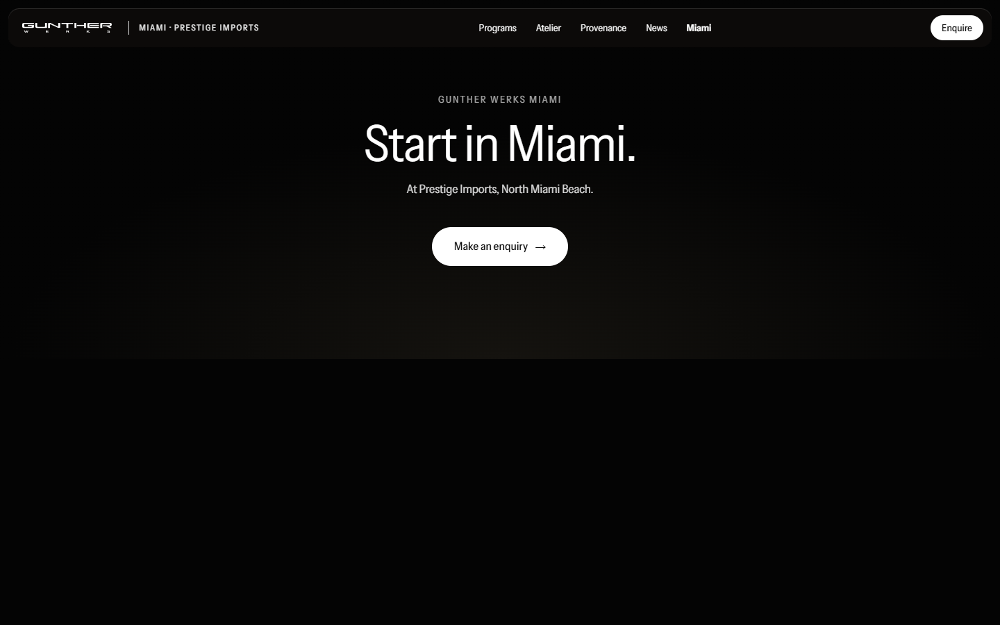
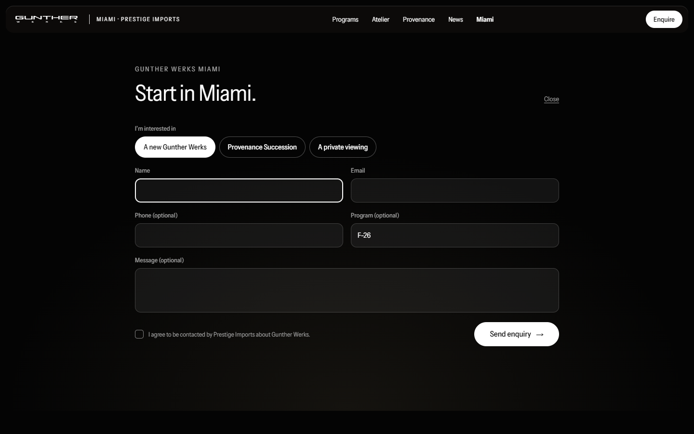
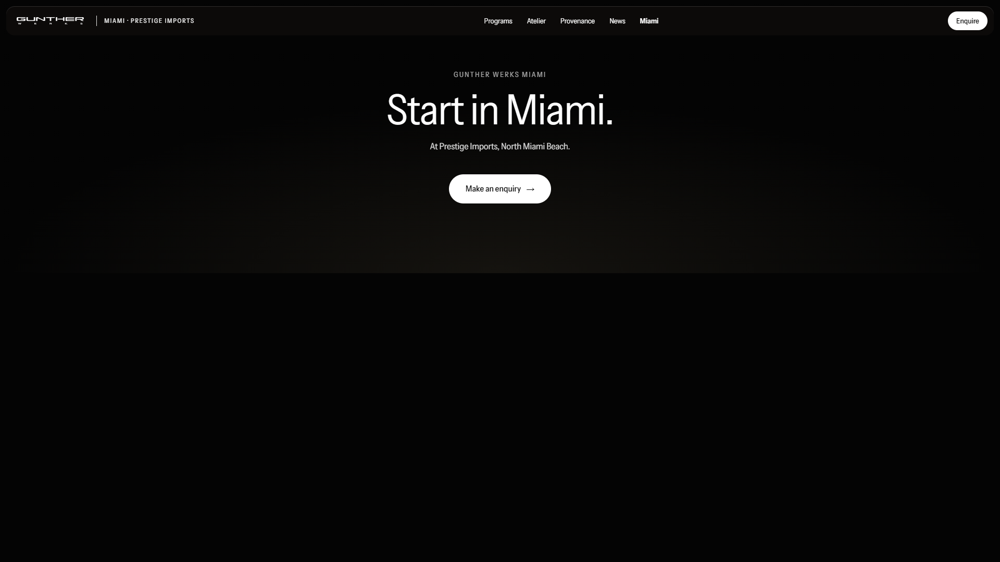
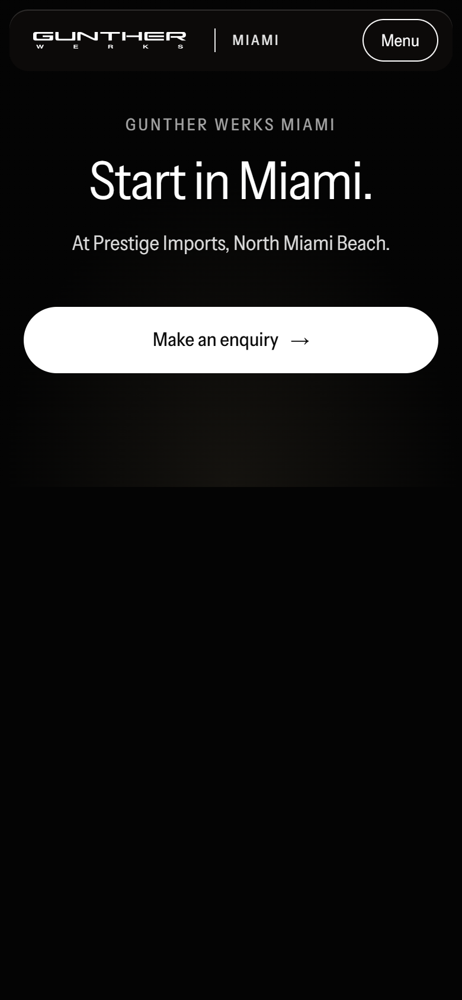
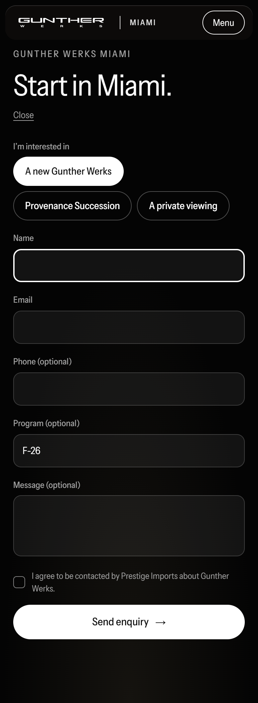
Rendered in Chrome at 1440×900, 1920×1080 and 390×844 @2×. Overflow is 0 at every width and no request failed. Sources are in prototype/concept-g/_contracts/: the *-v2.html pages, v2.css, and img/cut/ for the cleaned cutouts. Waiting for review; nothing is integrated.